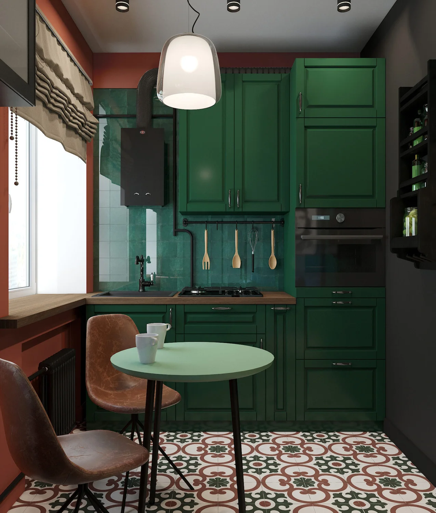

Дизайн-проект с визуализацией
Квартира с зелёной кухней
Тёмно-зелёные фасады собраны вокруг компактного обеденного места. Орнамент пола и круглый стол добавляют кухне графичности.
- Площадь
- 43 м²

К галерееВизуализация
Галерея проекта16 — 16 изображений


 Следующий проектКвартира для господина N
Следующий проектКвартира для господина N